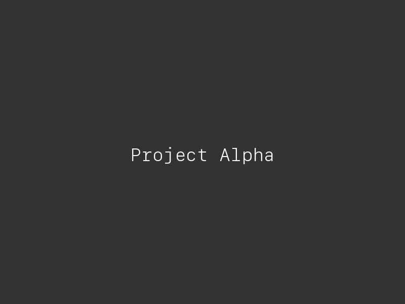
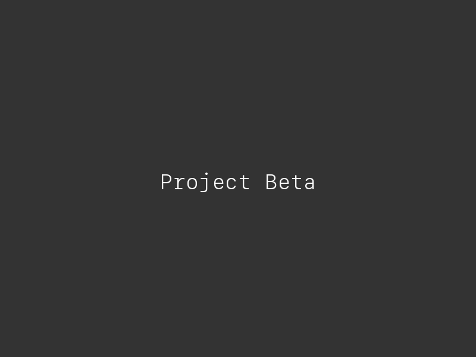
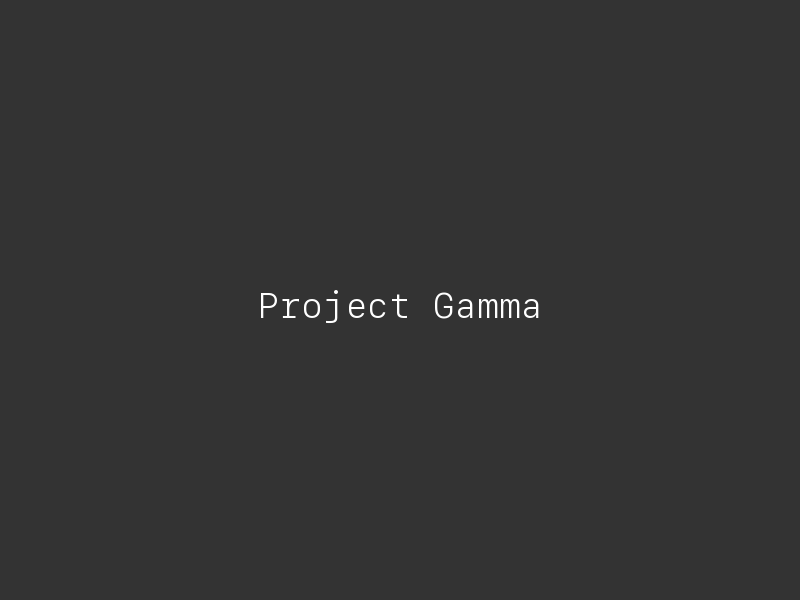

Project Alpha
Обзор
Project Alpha — мобильное приложение для управления задачами. Команда обратилась с запросом на полный редизайн: от исследований до финальных экранов.
Основная задача — упростить флоу создания задач и повысить ежедневное удержание пользователей.

Процесс
Начали с интервью: 12 пользователей, 3 роли. Обнаружили, что основная боль — сложность повторяющихся задач. Вместо копирования люди заводили задачи заново каждый раз.
Провели конкурентный анализ 8 продуктов, собрали карту возможностей. Приоритизировали по ICE и определили MVP-скоуп.
Решения
Разработали три ключевых решения:
- Шаблоны задач с автозаполнением
- Quick-add из любого экрана приложения
- Прогресс-бар для серий повторяющихся задач
Каждое решение прошло 2 раунда юзабилити-тестирования. Iteration rate: 3 дня от гипотезы до теста.


Результат
Приложение запущено в App Store и Google Play. DAU вырос на 32% за первый месяц после редизайна. Среднее время создания задачи сократилось с 45 до 18 секунд.
Команда продолжает развивать продукт по нашей дизайн-системе и гайдлайнам.